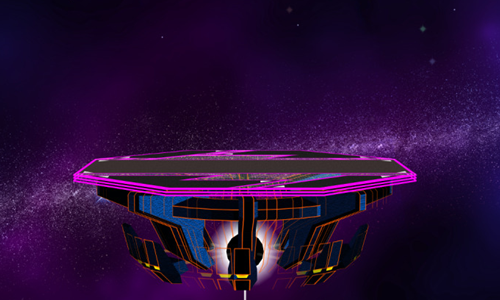

Neutral
Goals / Advantageous Positioning / Movement
Advantageous Positions
best
good
ok
bad
General Game plan
You want to be dashing just outside his range (dair's range) or just within his range to force him to choose between overshooting your dash back or undershooting
You want to hold center, as this forces Falco into the corner and allows you to empty hop at center to take lazer into fair
If your far enough away, Falco has to jump to get anything done, we can exploit this in a variety of ways
Falco will ether jump in with an aerial or a lazer
You want to aim to ether beat the jump before anything comes out, or jump with him to out range him
If he does an aerial, nair normally lasts long enough to catch him and if he does not jump, you can AC it and dash away if he comes in again (because he is slow, he can't really punish this)
However if he lazers the jump / nair, if you have jumped with falco, you should be at a height where you can fair out of the lazers stun
When he jumps to lazer, you can do a variety of things depending of your positioning:
1. you can attack the jump with a dash attack, nair or fair
2. you can dash away if your too close or in a dash dance and PS the lazer
3. if your far enough away, you can just crouch PS without giving up space
4. if he approaches with lazer, you can: (jump, take the lazer, and fair) or (sheild grab him if he spaces badly)
When you get hit by lazer in the air do one of:
1: fair if he is close enough to be hit
2: wave land back / forwards
3: jump to / jump WD to a platform
4: land and react to his option
When you (or falco) get hit by lazer on the ground do one of:
1: dash back and hope to get a grab
2: nair in place to catch him lazering again
3: WD / dash away for forwards depending where the Falco flies too (if he overshoots or undershoots his next move)
4: If you have a hard read on what he’ll do next, you can do something else
When he is dash dancing camping, you can WD forward down tilt/fsmash, but its better to take space, as the bird doesn't have much movement
You want to hold center, as this forces Falco into the corner and allows you to empty hop at center to take lazer into fair
If your far enough away, Falco has to jump to get anything done, we can exploit this in a variety of ways
Falco will ether jump in with an aerial or a lazer
You want to aim to ether beat the jump before anything comes out, or jump with him to out range him
If he does an aerial, nair normally lasts long enough to catch him and if he does not jump, you can AC it and dash away if he comes in again (because he is slow, he can't really punish this)
However if he lazers the jump / nair, if you have jumped with falco, you should be at a height where you can fair out of the lazers stun
When he jumps to lazer, you can do a variety of things depending of your positioning:
1. you can attack the jump with a dash attack, nair or fair
2. you can dash away if your too close or in a dash dance and PS the lazer
3. if your far enough away, you can just crouch PS without giving up space
4. if he approaches with lazer, you can: (jump, take the lazer, and fair) or (sheild grab him if he spaces badly)
When you get hit by lazer in the air do one of:
1: fair if he is close enough to be hit
2: wave land back / forwards
3: jump to / jump WD to a platform
4: land and react to his option
When you (or falco) get hit by lazer on the ground do one of:
1: dash back and hope to get a grab
2: nair in place to catch him lazering again
3: WD / dash away for forwards depending where the Falco flies too (if he overshoots or undershoots his next move)
4: If you have a hard read on what he’ll do next, you can do something else
When he is dash dancing camping, you can WD forward down tilt/fsmash, but its better to take space, as the bird doesn't have much movement
Options to respect
Dair leads to combos after about 15%
Shine combos until about 70-80% where you can SDI up the dair to avoid shine follow ups
When power sheild, hold the sheild, don't drop sheild, wave dash out of it
Shine combos until about 70-80% where you can SDI up the dair to avoid shine follow ups
When power sheild, hold the sheild, don't drop sheild, wave dash out of it
Options to not respect / Can be punished
Falco in the corner doesn't have many options. You have to try to catch him as he comes out
Grab leads to nothing if you SDI the lazer
Grab leads to nothing if you SDI the lazer
Punish Game
Punish routes
Key Combos
Super late fair/spaced nair can both lead to a clean grab opportunity at low %
Edge Guarding
If Falco doesn't have his double jump and he's below the stage, he has to up b. This is when you go deep and kill him
Can jab side b from ledge, if it clanks, go dash grab him, your technically positive here
Falco resources: double jump, up b / side b, airdodge, (some stages walljump), and shine for stalling.
Can jab side b from ledge, if it clanks, go dash grab him, your technically positive here
Falco resources: double jump, up b / side b, airdodge, (some stages walljump), and shine for stalling.
Throw follow ups
Defence
If you get overwhelmed, you can buffer a roll with C stick, and if the Falco doesn't read it, he can't get to you in time
Recovery
Watch out for dair and dsmash
Stages (ordered)
Good

Bad